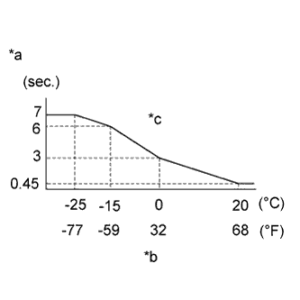

СИСТЕМА ПРЕДПУСКОВОГО ПОДОГРЕВА (для моделей с DPF) > ПРОВЕРКА БЕЗ СНЯТИЯ С АВТОМОБИЛЯ |
| 1. ПРОВЕРЬТЕ ПРОДОЛЖИТЕЛЬНОСТЬ ВКЛЮЧЕНИЯ КОНТРОЛЬНОЙ ЛАМПЫ СВЕЧЕЙ НАКАЛИВАНИЯ |
|  |
Установите замок зажигания в состояние ON (ВКЛ) (IG) и измерьте время, в течение которого контрольная лампа остается включенной.
| *a | Время свечения контрольной лампы включения свечей накаливания |
| *b | Температура охлаждающей жидкости двигателя |
| *c | При атмосферном давлении 100 кПа |
| 2. ПРОВЕРЬТЕ ПРЕДПУСКОВОЙ ПОДОГРЕВ |
Измерьте напряжение на свечах накаливания.
Измерьте время, в течение которого это напряжение подается на свечи накаливания, когда зажигание включено (IG).
| Условие | Продолжительность предпускового подогрева |
| Напряжение аккумуляторной батареи не ниже 14 В | 1 с |
| Температура охлаждающей жидкости не ниже 40°C (104°F) | 1 с |
| Любое другое состояние | 15 с |
| 3. ПРОВЕРЬТЕ ПОСТНАКАЛ |
Измерьте напряжение на свечах накаливания после запуска двигателя.
| Условия измерений | Заданные условия |
| Температура охлаждающей жидкости составляет 25°C (77°F) или менее | 11–14 В |
| Температура охлаждающей жидкости не ниже 25°C (77°F) | 0 В |